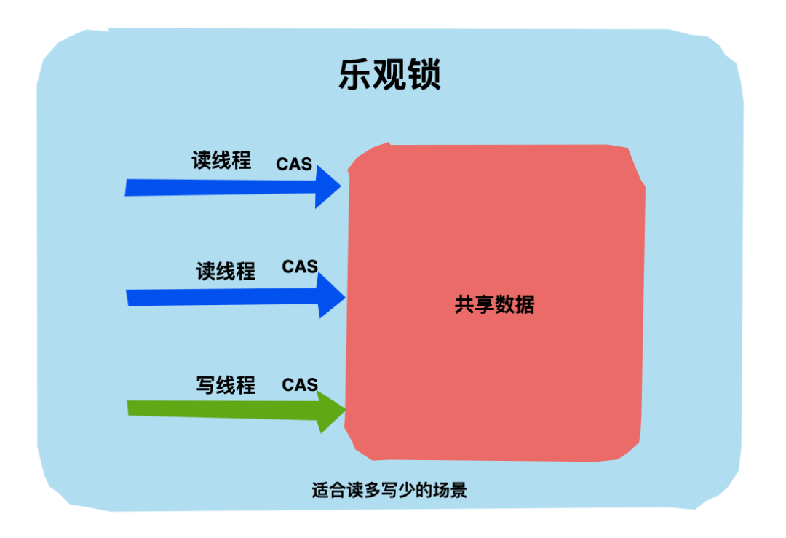
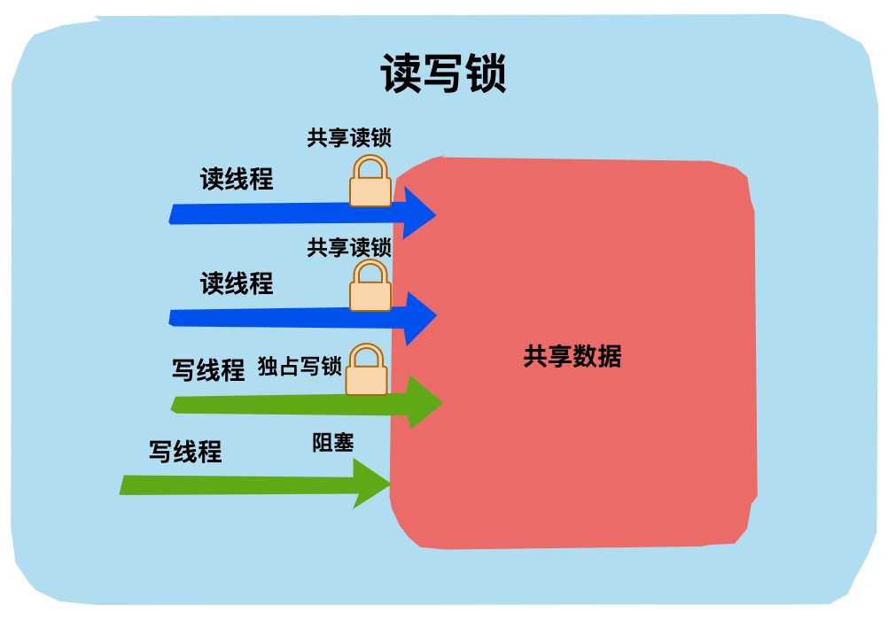

乐观锁和悲观锁 独占锁和共享锁 互斥锁和读写锁 公平锁和非公平锁 可重入锁 自旋锁 分段锁 锁升级（无锁|偏向锁|轻量级锁|重量级锁） 锁优化技术（锁粗化、锁消除）
乐观锁和悲观锁
悲观锁
悲观锁对应于生活中悲观的人，悲观的人总是想着事情往坏的方向发展。
举个生活中的例子，假设厕所只有一个坑位了，悲观锁上厕所会第一时间把门反锁上，这样其他人上厕所只能在门外等候，这种状态就是「阻塞」了。
回到代码世界中，一个共享数据加了悲观锁，那线程每次想操作这个数据前都会假设其他线程也可能会操作这个数据，所以每次操作前都会上锁，这样其他线程想操作这个数据拿不到锁只能阻塞了。

在 Java 语言中 synchronized 和 ReentrantLock等就是典型的悲观锁，还有一些使用了 synchronized 关键字的容器类如 HashTable 等也是悲观锁的应用。
乐观锁
乐观锁 对应于生活中乐观的人，乐观的人总是想着事情往好的方向发展。
举个生活中的例子，假设厕所只有一个坑位了，乐观锁认为：这荒郊野外的，又没有什么人，不会有人抢我坑位的，每次关门上锁多浪费时间，还是不加锁好了。你看乐观锁就是天生乐观！
回到代码世界中，乐观锁操作数据时不会上锁，在更新的时候会判断一下在此期间是否有其他线程去更新这个数据。
乐观锁可以使用版本号机制和CAS算法实现。在 Java 语言中 java.util.concurrent.atomic包下的原子类就是使用CAS 乐观锁实现的。
两种锁的使用场景
悲观锁和乐观锁没有孰优孰劣，有其各自适应的场景。
乐观锁适用于写比较少（冲突比较小）的场景，因为不用上锁、释放锁，省去了锁的开销，从而提升了吞吐量。
如果是写多读少的场景，即冲突比较严重，线程间竞争激励，使用乐观锁就是导致线程不断进行重试，这样可能还降低了性能，这种场景下使用悲观锁就比较合适。
独占锁和共享锁
独占锁
独占锁是指锁一次只能被一个线程所持有。如果一个线程对数据加上排他锁后，那么其他线程不能再对该数据加任何类型的锁。获得独占锁的线程即能读数据又能修改数据。
JDK中的synchronized和java.util.concurrent(JUC)包中Lock的实现类就是独占锁。
共享锁
共享锁是指锁可被多个线程所持有。如果一个线程对数据加上共享锁后，那么其他线程只能对数据再加共享锁，不能加独占锁。获得共享锁的线程只能读数据，不能修改数据。
在 JDK 中 ReentrantReadWriteLock 就是一种共享锁。
互斥锁和读写锁
互斥锁
互斥锁是独占锁的一种常规实现，是指某一资源同时只允许一个访问者对其进行访问，具有唯一性和排它性。
互斥锁一次只能一个线程拥有互斥锁，其他线程只有等待。
读写锁
读写锁是共享锁的一种具体实现。读写锁管理一组锁，一个是只读的锁，一个是写锁。
读锁可以在没有写锁的时候被多个线程同时持有，而写锁是独占的。写锁的优先级要高于读锁，一个获得了读锁的线程必须能看到前一个释放的写锁所更新的内容。
读写锁相比于互斥锁并发程度更高，每次只有一个写线程，但是同时可以有多个线程并发读。
在 JDK 中定义了一个读写锁的接口：ReadWriteLock
public interface ReadWriteLock {
/**
* 获取读锁
*/
Lock readLock();
/**
* 获取写锁
*/
Lock writeLock();
}
ReentrantReadWriteLock 实现了ReadWriteLock接口，具体实现这里不展开，后续会深入源码解析。
公平锁和非公平锁
公平锁
公平锁是指多个线程按照申请锁的顺序来获取锁，这里类似排队买票，先来的人先买，后来的人在队尾排着，这是公平的。
在 java 中可以通过构造函数初始化公平锁
/**
* 创建一个可重入锁，true 表示公平锁，false 表示非公平锁。默认非公平锁
*/
Lock lock = new ReentrantLock(true);
非公平锁
非公平锁是指多个线程获取锁的顺序并不是按照申请锁的顺序，有可能后申请的线程比先申请的线程优先获取锁，在高并发环境下，有可能造成优先级翻转，或者饥饿的状态（某个线程一直得不到锁）。
在 java 中 synchronized 关键字是非公平锁，ReentrantLock默认也是非公平锁。
/**
* 创建一个可重入锁，true 表示公平锁，false 表示非公平锁。默认非公平锁
*/
Lock lock = new ReentrantLock(false);
可重入锁
可重入锁又称之为递归锁，是指同一个线程在外层方法获取了锁，在进入内层方法会自动获取锁。
对于Java ReentrantLock而言, 他的名字就可以看出是一个可重入锁。对于Synchronized而言，也是一个可重入锁。
敲黑板：可重入锁的一个好处是可一定程度避免死锁。
以 synchronized 为例，看一下下面的代码：
public synchronized void mehtodA() throws Exception{
// Do some magic tings
mehtodB();
}
public synchronized void mehtodB() throws Exception{
// Do some magic tings
}
上面的代码中 methodA 调用 methodB，如果一个线程调用methodA 已经获取了锁再去调用 methodB 就不需要再次获取锁了，这就是可重入锁的特性。如果不是可重入锁的话，mehtodB 可能不会被当前线程执行，可能造成死锁。
自旋锁
自旋锁是指线程在没有获得锁时不是被直接挂起，而是执行一个忙循环，这个忙循环就是所谓的自旋。
自旋锁的目的是为了减少线程被挂起的几率，因为线程的挂起和唤醒也都是耗资源的操作。
如果锁被另一个线程占用的时间比较长，即使自旋了之后当前线程还是会被挂起，忙循环就会变成浪费系统资源的操作，反而降低了整体性能。因此自旋锁是不适应锁占用时间长的并发情况的。
在 Java 中，AtomicInteger 类有自旋的操作，我们看一下代码：
public final int getAndAddInt(Object o, long offset, int delta) {
int v;
do {
v = getIntVolatile(o, offset);
} while (!compareAndSwapInt(o, offset, v, v + delta));
return v;
}
CAS 操作如果失败就会一直循环获取当前 value 值然后重试。
另外自适应自旋锁也需要了解一下。
在JDK1.6又引入了自适应自旋，这个就比较智能了，自旋时间不再固定，由前一次在同一个锁上的自旋时间以及锁的拥有者的状态来决定。如果虚拟机认为这次自旋也很有可能再次成功那就会次序较多的时间，如果自旋很少成功，那以后可能就直接省略掉自旋过程，避免浪费处理器资源。
分段锁
分段锁 是一种锁的设计，并不是具体的一种锁。
分段锁设计目的是将锁的粒度进一步细化，当操作不需要更新整个数组的时候，就仅仅针对数组中的一项进行加锁操作。

在 Java 语言中 CurrentHashMap 底层就用了分段锁，使用Segment，就可以进行并发使用了。
锁升级（无锁|偏向锁|轻量级锁|重量级锁）
JDK1.6 为了提升性能减少获得锁和释放锁所带来的消耗，引入了4种锁的状态：无锁、偏向锁、轻量级锁和重量级锁，它会随着多线程的竞争情况逐渐升级，但不能降级。
无锁
无锁状态其实就是上面讲的乐观锁，这里不再赘述。
偏向锁
Java偏向锁(Biased Locking)是指它会偏向于第一个访问锁的线程，如果在运行过程中，只有一个线程访问加锁的资源，不存在多线程竞争的情况，那么线程是不需要重复获取锁的，这种情况下，就会给线程加一个偏向锁。
偏向锁的实现是通过控制对象Mark Word的标志位来实现的，如果当前是可偏向状态，需要进一步判断对象头存储的线程 ID 是否与当前线程 ID 一致，如果一致直接进入。
轻量级锁
当线程竞争变得比较激烈时，偏向锁就会升级为轻量级锁，轻量级锁认为虽然竞争是存在的，但是理想情况下竞争的程度很低，通过自旋方式等待上一个线程释放锁。
重量级锁
如果线程并发进一步加剧，线程的自旋超过了一定次数，或者一个线程持有锁，一个线程在自旋，又来了第三个线程访问时（反正就是竞争继续加大了），轻量级锁就会膨胀为重量级锁，重量级锁会使除了此时拥有锁的线程以外的线程都阻塞。
升级到重量级锁其实就是互斥锁了，一个线程拿到锁，其余线程都会处于阻塞等待状态。
在 Java 中，synchronized 关键字内部实现原理就是锁升级的过程：无锁 --> 偏向锁 --> 轻量级锁 --> 重量级锁。这一过程在后续讲解 synchronized 关键字的原理时会详细介绍。
锁优化技术（锁粗化、锁消除）
锁粗化
锁粗化就是将多个同步块的数量减少，并将单个同步块的作用范围扩大，本质上就是将多次上锁、解锁的请求合并为一次同步请求。
举个例子，一个循环体中有一个代码同步块，每次循环都会执行加锁解锁操作。
private static final Object LOCK = new Object();
for(int i = 0;i < 100; i++) {
synchronized(LOCK){
// do some magic things
}
}
经过锁粗化后就变成下面这个样子了：
synchronized(LOCK){
for(int i = 0;i < 100; i++) {
// do some magic things
}
}
锁消除
锁消除是指虚拟机编译器在运行时检测到了共享数据没有竞争的锁，从而将这些锁进行消除。
举个例子让大家更好理解。
public String test(String s1, String s2){
StringBuffer stringBuffer = new StringBuffer();
stringBuffer.append(s1);
stringBuffer.append(s2);
return stringBuffer.toString();
}
上面代码中有一个 test 方法，主要作用是将字符串 s1 和字符串 s2 串联起来。
test 方法中三个变量s1, s2, stringBuffer， 它们都是局部变量，局部变量是在栈上的，栈是线程私有的，所以就算有多个线程访问 test 方法也是线程安全的。
我们都知道 StringBuffer 是线程安全的类，append 方法是同步方法，但是 test 方法本来就是线程安全的，为了提升效率，虚拟机帮我们消除了这些同步锁，这个过程就被称为锁消除。
StringBuffer.class
// append 是同步方法
public synchronized StringBuffer append(String str) {
toStringCache = null;
super.append(str);
return this;
}
一张图总结：
前面讲了 Java 语言中各种各种的锁，最后再通过六个问题统一总结一下：
-- End --
往期回顾


发表评论 取消回复